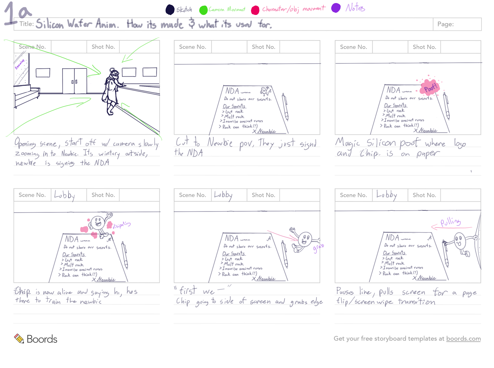

Animation
Microchip Makers
Software: Photoshop, Procreate

Some Assets for Microchip Makers

The first story board for Microchip Maker's
Microchip Makers is a 4-minute, Schoolhouse Rock-style animation created for Boise State University's MER Institute to support outreach in K-12 schools.
The creation of Microchip Makers was a collaborative process involving myself and two other animators. My responsibilities included creating storyboards, backgrounds, assets, and frame-by-frame animations. We worked closely with our music composer to develop initial storyboards, as well as to define the tone and style of the animation. Once the initial storyboards were completed, we produced our first animatic to accompany a rough version of the song. From that point on, we alternated responsibilities, creating backgrounds, frame-by-frame animations, and assets. Within a few weeks, the animation was completed.
One of our initial challenges was learning to collaborate effectively on an animation project of this scale within a tight deadline. Though experienced in our respective areas, we quickly adapted by establishing a streamlined workflow that allowed us to work efficiently as a team. Given the one-month timeline, we coordinated closely on tasks like research, character design, and storyboarding to stay on track. Midway through production, we realized additional time was needed to achieve our quality standards. After discussing with our client, we secured an extension, enabling us to deliver a polished, high-quality animation that met both our expectations and those of our client.
Pursuit of Time game trailer
Software: Adobe Premier Pro, Adobe Animate, Procreate
Open and closing animations of Pursuit of Time
Software: Adobe Animate, Procreate
Pursuit of Time was a collaborative project to create an interactive comic. Each team member illustrated their own section, and I also handled the opening and closing animations for the project.
The opening and closing animations assets and backgrounds were made in Procreate and exported into Adobe Animate were they were assembled and animated.
The game trailer we made by combining parts of the animations and game play in Premier Pro. Since the game play and story focuses on time and iregualer flow of time I played music from the game in reverse throughout the trailer.